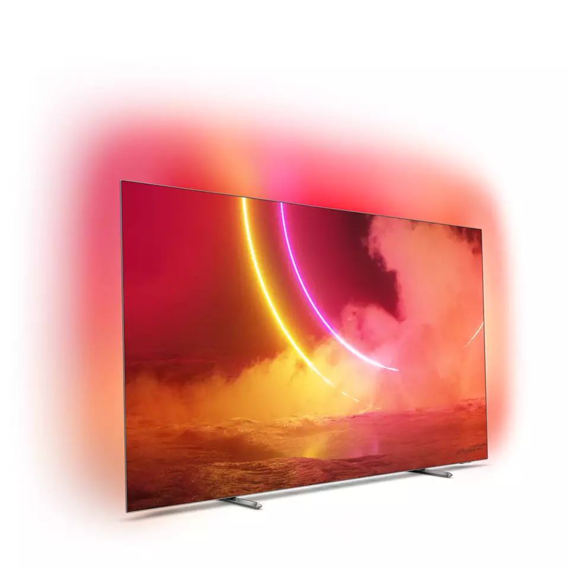
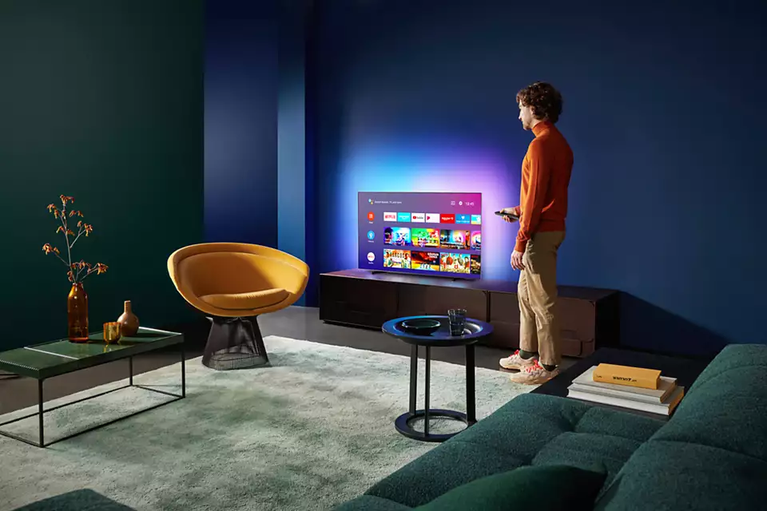
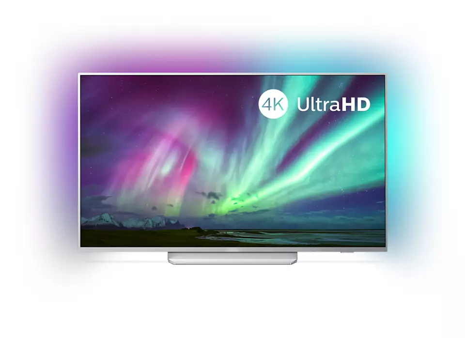
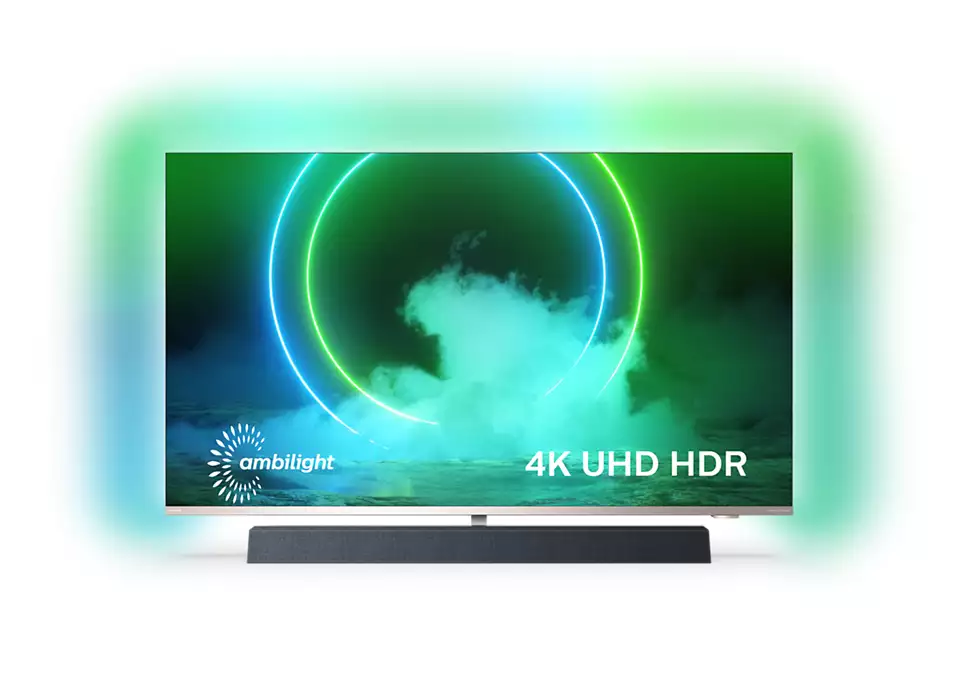

 Ambilight büyüsü. Yalnızca Philips'te. Philips Ambilight ile her kare size daha yakındır. TV'nin kenarlarındaki akıllı LED'ler ekrandaki hareketlere tepki verir ve büyüleyici bir ışıltı yayar. Bu deneyimi bir kez yaşadıktan sonra diğer TV'lerden nasıl keyif aldığınızı sorgulayacaksınız Philips OLED TV. Son derece gerçekçi. Philips OLED TV ile daha geniş izleme açısı ve her sahnenin olağanüstü gerçekçi göründüğü benzersiz HDR görüntüye sahip olursunuz. Daha derin siyahlar, daha canlı renkler ve hassas bir şekilde yeniden üretilen gölgeler ve vurgulardaki ayrıntıları deneyimlersiniz. Yapay Zeka özellikli P5 motor. İzlediğiniz her şeyde gerçeği hissedin. Yapay Zeka özellikli Philips P5 işlemci sizi bambaşka bir dünyaya götüren gerçekçi görüntüler sunar. Derin öğrenme özellikli Yapay Zeka algoritması, görüntüleri insan beynine benzer şekilde işler. Ne izliyor olursanız olun, gerçekçi ayrıntılar ve kontrast, zengin renkler ve akıcı hareket elde edersiniz. Önemli HDR formatları. Yönetmenin gözünden bakın. Philips 4K UHD OLED TV, HDR10+ ve Dolby Vision dahil tüm önemli HDR formatlarıyla uyumludur. İster kaçırmamanız gereken bir dizi izleyin ister en yeni video oyununu oynayın, gölgeler hep daha derin olur. Parlak yüzeyler ışıldar. Renkler çok daha gerçekçi görünür. Hareket ise olağanüstü akıcıdır. Dolby Vision ve Dolby Atmos. Sinematik görüntü ve ses. Birinci sınıf Dolby ses ve video formatı desteği, izlediğiniz HDR içeriğin inanılmaz derecede gerçekçi görüneceği (ve duyulacağı) anlamına gelir. İster en yeni dizileri, ister bir Blu-Ray disk setini izleyin, tam anlamıyla yönetmenin hedeflediği kontrast, parlaklık ve renklerin tadını çıkarırsınız. Ayrıca netlik, ayrıntı ve derinlik sunan geniş bir ses deneyimi elde edersiniz.  Android TV. Sade ve akıllı. Philips Android TV'niz istediğiniz içeriğe istediğiniz zaman erişmenizi sağlar. En sevdiğiniz uygulamaları görebileceğiniz şekilde ana ekranı kişiselleştirerek filmleri veya favori programlarınızı kolayca başlatabilir veya kaldığınız yerden devam edebilirsiniz. Sesli kontrol. Yerleşik Google Asistan. Alexa ile çalışır. Philips Android TV'nizi sesinizle kontrol edin. Oyun oynamak, Netflix izlemek veya Google Play Store'da içerikler ve uygulamalar mı aramak istiyorsunuz? TV'nize söylemeniz yeterli. Ayrıca yerinizden kalkmanıza gerek bile kalmadan Google Asistan uyumlu akıllı ev cihazlarına komut vererek ışıkları kısabilir veya film geceniz için evin sıcaklığını ayarlayabilirsiniz. TV kumandasını aradığınız günler sona erdi. Şimdi Philips akıllı TV'nizi Amazon Echo gibi Alexa uyumlu cihazlarla kontrol etmek için sesinizi kullanabilirsiniz. Alexa ile TV'nizi açın, kanalı değiştirin, oyun konsolunuza geçin ve daha fazlasını yapın. DTS Play-Fi. Çoklu oda ses sistemi. Philips TV'nizin DTS Play-Fi özelliği ile herhangi bir odadaki uyumlu hoparlörlere bağlanabilirsiniz. Yemek hazırlarken filmi dinlemek veya misafirlerinize içecek hazırlarken maç yorumunu kaçırmamak için mutfaktaki kablosuz hoparlörü kullanabilirsiniz. Android TV. Sade ve akıllı. Philips Android TV'niz istediğiniz içeriğe istediğiniz zaman erişmenizi sağlar. En sevdiğiniz uygulamaları görebileceğiniz şekilde ana ekranı kişiselleştirerek filmleri veya favori programlarınızı kolayca başlatabilir veya kaldığınız yerden devam edebilirsiniz. Detaylı Bilgi İçin Bkz. EPG ve gerçek görünürlük (8 güne kadar) ülkeye ve operatöre bağlıdır. Android Uygulaması teklifleri ülkeden ülkeye farklılık gösterir. Daha fazla bilgi için lütfen ülkenizdeki Google Play Store'u ziyaret edin. 365 gün boyunca günde 4 saat çalışan bir televizyonun güç tüketimine dayanan, yıl başına kWh enerji tüketimi. Gerçek enerji tüketimi televizyonun nasıl kullanıldığına göre değişir. TV, "Ücretsiz" yayınlar için DVB alımını destekler. Bazı DVB operatörleri desteklenmeyebilir. Güncel liste Philips destek web sitesinin SSS bölümünde bulunabilir. Bazı operatörler için Koşullu Erişim veya abonelik gerekmektedir. Daha fazla bilgi için operatörünüze başvurun. Philips TV Remote uygulaması ve ilgili işlevler TV modeli, operatör ve ülkenin yanı sıra akıllı cihazın modeli ve Ä°ÅŸletim Sistemine göre farklılık gösterir. Daha fazla bilgi için lütfen şu adresi ziyaret edin: www.philips.com/TVRemoteapp. Smart TV uygulama teklifleri, TV modeli ve ülkeye göre farklılık gösterir. Daha fazla bilgi için lütfen şu adresi ziyaret edin: www.philips.com/smarttv. USB kayıt özelliği sadece dijital kanallarda kullanılabilir, kayıtlar yayın kopya koruması (CI+) tarafından sınırlanabilir. Ülke ve kanal kısıtlamaları uygulanabilir. Amazon Uygulamalarınız ülkenizde her zaman kullanıma uygun olmayabilir. (Amazon uygulamaları şu anda yalnızca Birleşik Krallık, Almanya ve Avusturya'da kullanılabilir) Bu televizyon sadece teknoloji alternatiflerinin olmadığı belirli parçalar veya bileşenlerde, RoHS Yönergesi maddeleri altında mevcut muafiyet ile uyumluluk gösteren oranda kurşun içerir. Ä°ÅŸlevselliği, ChromeCast yerleşik uygulamalarına ve akıllı cihazlara bağlıdır. Daha fazla bilgi için lütfen ChromeCast yerleşik ürün sayfalarını ziyaret edin. Diğer Modeller  4K UHD LEDTV 55PUS8204/12  4K UHD LEDTV 55PUS9435/12